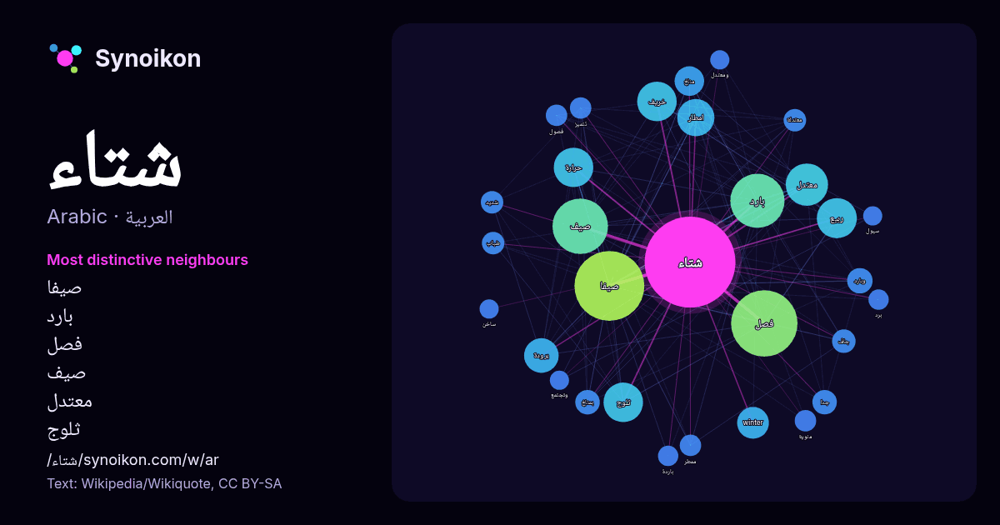

العربية · قائمة كلمات اليوم
شتاء
“winter” · الكلمات الموجودة حولها في 763 ورودًا من ويكيبيديا, Wikiquote.

الجيران الأكثر تميّزًا
- صيفا 104×
- بارد 59×
- فصل 57×
- صيف 49×
- معتدل 37×
- ثلوج 33×
- خريف 31×
- ربيع 27×
- برودة 26×
- امطار 25×
- winter 23×
- حرارة 18×
- وبارد 15×
- بمناخ 14×
- مناخ 13×
- جاف 12×
- ضباب 11×
- معتدلة 11×
- ممطر 11×
- فصول 9.4×
× = كم مرة أكثر مما في نصوص ويكيبيديا العامة.
الجيران الأكثر تكرارًا
- صيفا 106
- فصل 96
- صيف 67
- بارد 64
- معتدل 39
- ربيع 35
- ثلوج 34
- حرارة 34
- خريف 34
- امطار 30
- برودة 26
- winter 22
- درجة 19
- مناخ 19
- منطقة 19
- قرية 18
- مناطق 15
- قصة 14
- وبارد 14
- بمناخ 13
في السياق
- الشِّتَاء (الجمع: أَشْتِيَة) هو أبرد فصل من السنة في المناخ القطبي وكذلك المناخ المعتدل، ويأتي بين الخريف والربيع. وينتج فصل الشتاء عن ميلان محور الأرض Wikipedia snippets · شتاء
- شتاء ساخن مسلسل سوري، إنتاج عام 2009. يشتمل المسلسل على محاور كثيرة مُشبعة بالأحداث الدرامية المشوقة شكّلت زاد المسلسل الذي انطلق بأحداثه من واقعة حقيقية، Wikipedia snippets · شتاء ساخن (مسلسل)
- شتاء في الجليد (الفرنسية: Un hivernage dans les glaces)، (الإنجليزية: A Winter amid the Ice) قصة قصيرة من تأليف الروائي جول فيرن صدرت عام 1855. رحلات غير Wikipedia snippets · شتاء في الجليد
- الشتاء النووي (ويعرف أحياناً باسم الشتاء الذري) هو أثر بيئي افتراضي عن حالة الطقس التي يمكن أن تعقب أية حرب نووية. المتوقع أن يسود طقس بارد لمدة أشهر أو Wikipedia snippets · شتاء نووي
- ليلة شتاء دافئة فيلم مصري أنتج في سنة 1981 والفيلم مقتبس عن الفيلم الأمريكي حدث ذات ليلة. يتم عقد قرآن سارة وحبيبها محيى ثم تسافر سارة مع أبيها المقاول Wikipedia snippets · ليلة شتاء دافئة (فلم)
- الشتاء الروسي، يتم تجسيده أحياناً على هيئة «الجنرال الصقيع» (الروسية: Генерал Мороз) أو «الجنرال الشتاء»، هو جانب من مناخ روسيا ساهم في الإخفاقات العسكرية Wikipedia snippets · الشتاء الروسي
- شتاء 1991 -1992 في فلسطين كان الأكثر غزارة للأمطار منذ 90 عاما وفي خلال أشهر الشتاء نشأت عواصف كبرى وتساقط البرد والثلوج بشكل غزير ونادر جدا في جميع أنحاء Wikipedia snippets · شتاء فلسطين (1991–92)
- شمس الشتاء (بالتركية:Kış Güneşi) مسلسل تركي عرض في 23 فبراير 2016 من إخراج مورات اونبول يعرض على قناة شو تي في التركية. يتحدث المسلسل عن قصة توأم احدهما Wikipedia snippets · شمس الشتاء
كلمات أخرى
- أغنية
- إله
- تاريخ
- جبل
- جرس
- جزيرة
- جسر
- حديقة
- حصان
- حقيقة
- حياة
- خبز
- خريطة
- خريف
- ذهب
- زمن
- ساعة
- شاي
- صحة
- صحراء
- صمت
- صيف
- طبيعة
- طريق
- طعام
- ظل
- عائلة
- عاصفة
- عسل
- علم
- عمل
- غابة
- فن
- قطار
- قطة
- قلب
- قوة
- كلب
- لغة
- ماء
- مال
- مدينة
- مرآة
- مطر
- ملح
- مناخ
- موت
- نجم
- والدة
حُسبت مسبقًا في 2026-10-09 بالإعدادات الافتراضية (±5 كلمات، مدوّنة متوسطة). يمكن للخريطة التفاعلية تحديثها ببيانات حية.
واجهة مترجمة آليًا؛ نرحب بالتصحيحات.